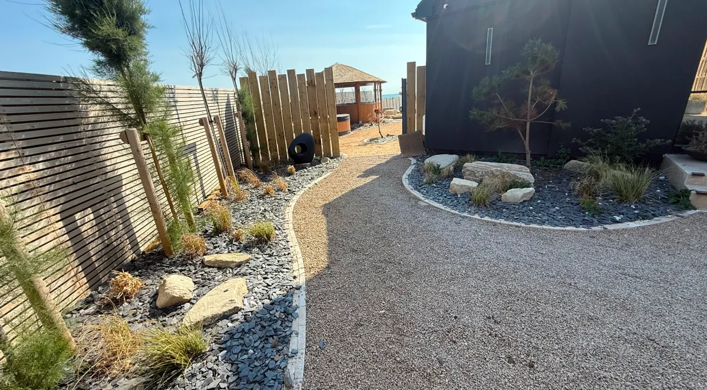
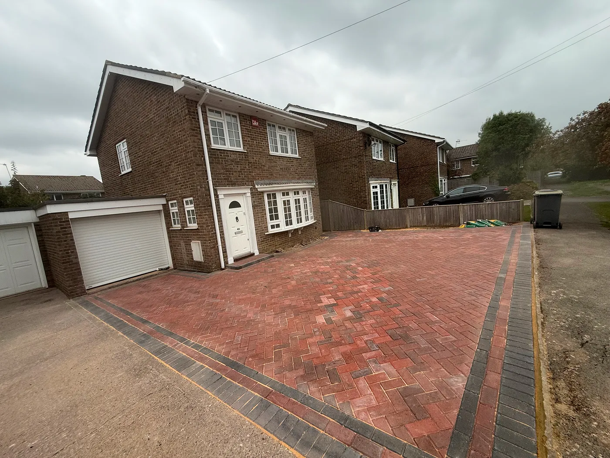

Gardens worthy of the South Downs.
Petersfield sits at the edge of the South Downs National Park — an area of outstanding natural beauty that deserves landscaping of equal quality. A Sterling Landscapes works with Petersfield homeowners to create gardens that sit beautifully within this landscape while delivering modern functionality and luxury.
The rolling chalk downland, ancient woodland and rural character of the area inspire a design approach that balances natural materials with contemporary living — gardens that feel like they belong, yet offer every comfort of a premium outdoor space.
Get a Free Quote
All A Sterling Landscapes services are available to Petersfield homeowners — from patios and driveways to complete bespoke garden transformations:
Natural stone patios that connect your home to the South Downs landscape.
Premium driveways designed for rural and village properties.
Timber fencing and bespoke gates that complement the rural setting.
Bespoke pergolas and structures with stunning landscape backdrops.
Natural stone walls and retaining structures for sloping South Downs sites.
Complete garden transformations sensitive to the Petersfield landscape.

Working near the South Downs requires an understanding of the natural environment. A Sterling Landscapes selects materials and designs that complement the surrounding countryside while delivering the premium finish clients expect.
Yes. A Sterling Landscapes regularly works with homeowners in Petersfield, Rogate and across the South Downs National Park area, creating gardens that sit beautifully within this stunning landscape.
Absolutely. We select natural stone, timber and materials that complement the surrounding countryside — ensuring your garden feels connected to the landscape rather than imposed upon it.
Yes. Contact us via our website or call 07795 599 909 to arrange a free, no-obligation site visit at your Petersfield property.
Whether you are envisioning a complete garden transformation or a single statement feature, A Sterling Landscapes is ready to bring your vision to life.